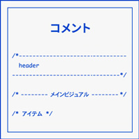

コメント

HTMLのコメント
- 「」の間にコメント内容を書く
<!-- これは表示されません --> <h1>これは表示されます</h1> <p>これは表示されます</p>
<body> <!-- header --> <header class="header"> </header> <!-- /header --> <!-- main --> <main> </main> <!-- /main --> <!-- footer --> <footer> </footer> <!-- /footer --> </body>
コメント３つ使い方
- 覚え書きやメモとして使用する
- タグの入れ子構造を見やすくする
- 修正前後のコードを保存しておく
記述例
- class名・id名などの終了タグの後ろにそのまま続けて記述する
<div class="contaier"> </div><!– /.container –>
記述例
- 完全に削除するかわからないコードをコメントアウトで残しておく
<div class="contaier"> <h3>コメントアウトの使い方</h3> <p>これは修正後の内容です</p> <!-- <h3>コメントアウトの使い方</h3> <p>これは修正前の内容です</p> --> </div><!– /.container –>
CSSのコメント
- 「/* 〜 */」の間にコメント内容を書く
セクションごとに見出しをつける
/*----------------------------------------- header -----------------------------------------*/ /* --------- メインビジュアル --------- */ /* アイテム */
具体的な処理内容を記述する
- どんな目的で書いてあるのかわかりにくいものは補足事項を書いておく
.box{ margin: auto; /* 上下左右中央寄せ */ }
一時的にcssの処理を無効化する
- 一部を無効化してブラウザ側で変化を確認する